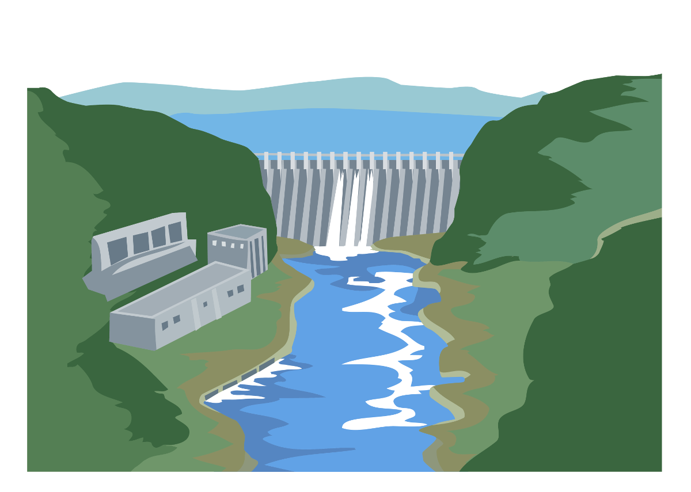
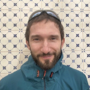
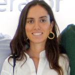
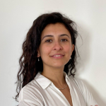

Where and how do third-country nationals enter irregularly into the EU, and exit from it? A new JRC report maps pathways of irregular migration and return, providing policymakers with improved evidence to support return and migration management policies.
About Knowledge4Policy
K4P connects research and policymaking, bringing together excellent science and analysis to support good decision-making across the EU.
K4P content is created by specialist research teams called knowledge communities.
Find out moreExplore
Our scientific teams carry out research in many different areas. Dive into the knowledge that matches your interest or field.
Each dot represents a piece of policy-relevant content. Hover over a dot and click to find out more about it.
Toggle between views to explore the data.
In focus
Topical policy briefs, insights and reports
In Europe, who is working to involve ordinary citizens in policymaking and democratic processes? A new navigable inventory helps to map the landscape of citizen engagement, and allows individuals and organisations to add their own activities.

Water reservoirs and large dams are complex systems, with large benefits and impacts. They have to be managed with an holistic techno-scientific approach, that considers all the aspects of the WEFE nexus for a better integrated water management.
Search our knowledge base
Recently published
The latest conversations, evidence, events and more
K4P in numbers
- Knowledge0+items of policy-relevant content
- Knowledge communities0research teams publishing on different policy-related topics
- Visitors0+every year
Meet our scientists
Find out about some of the researchers behind K4P knowledge

Mateusz TOKARSKI
Policy Analyst - JRC
Participatory and Deliberative Democracy
He has a background in culture studies, semiotics and environmental studies, with his main focus on environmental ethics.

Celia BURGAZ
Project Lead - JRC
Cancer Center
Public health expert & researcher managing the European Commission's Knowledge Centre on Cancer.

Sara ALTAMORE
Policy Researcher - JRC
Digital Sovereignty
Researcher, R&I project manager, and policy adviser on urban/regional development, climate adaptation, sustainability, and evidence-based policymaking.
Find the knowledge communities relevant to EU policies
Society, governance and territories
Behavioural Insights
Composite Indicators (CC-COIN)
Data Analysis and Robust Statistics (DARS)
Decision Analysis Lab (DA Lab)
Evidence-Informed Policymaking
Europe Media Monitor (EMM)
Migration and Demography
Modelling and Decision Analysis (CC-MOD)
Organisational Transformation
Participatory and Deliberative Democracy (CC-DEMOS)
Territorial Policies
Text Mining and Analysis (TMA)
Science Art Society
Science Insights